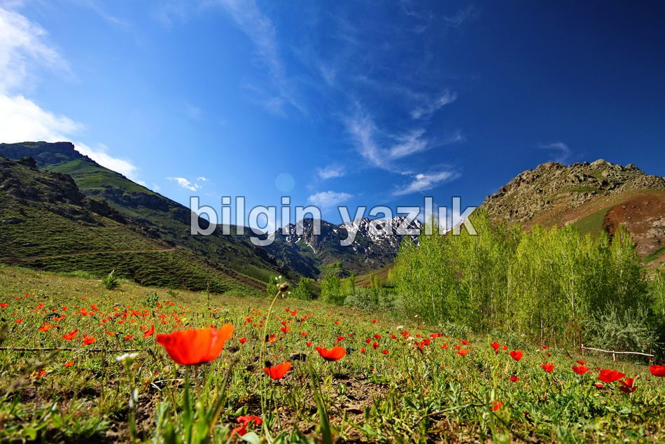
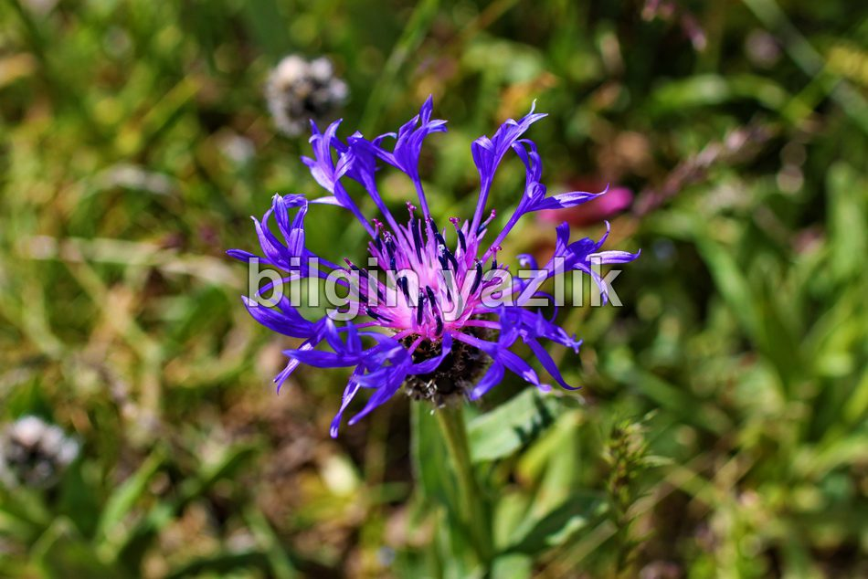
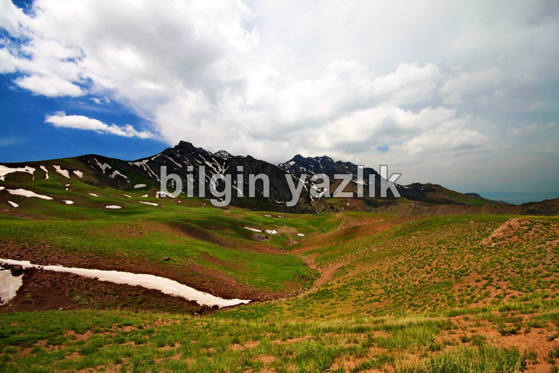
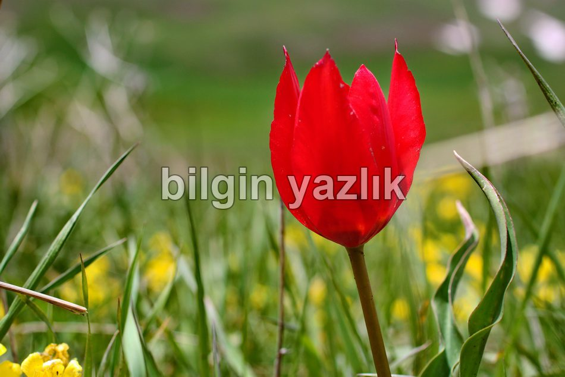
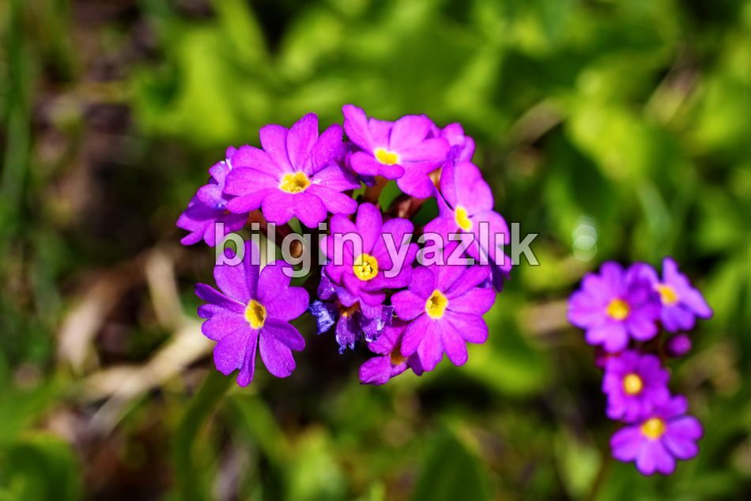
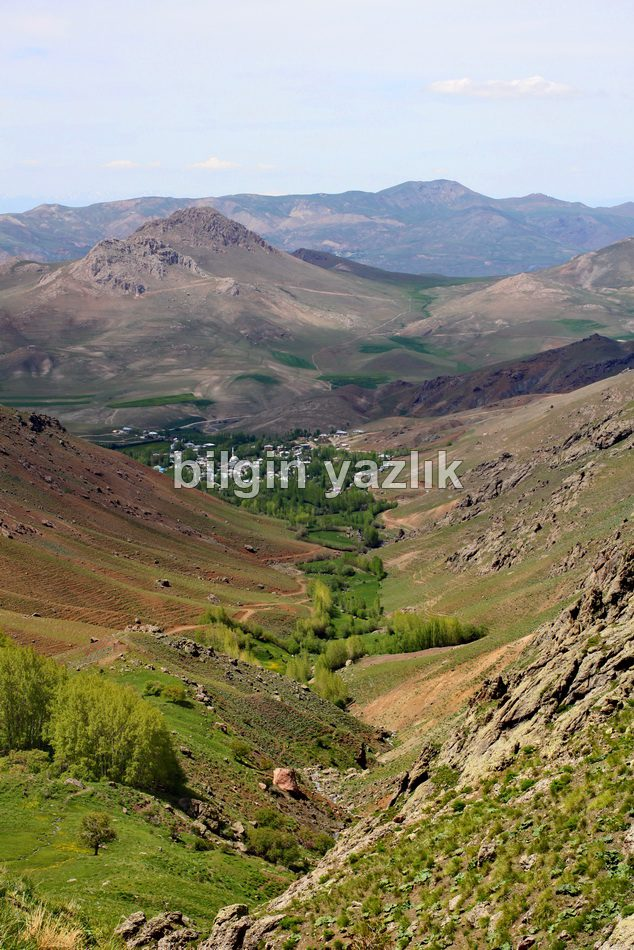
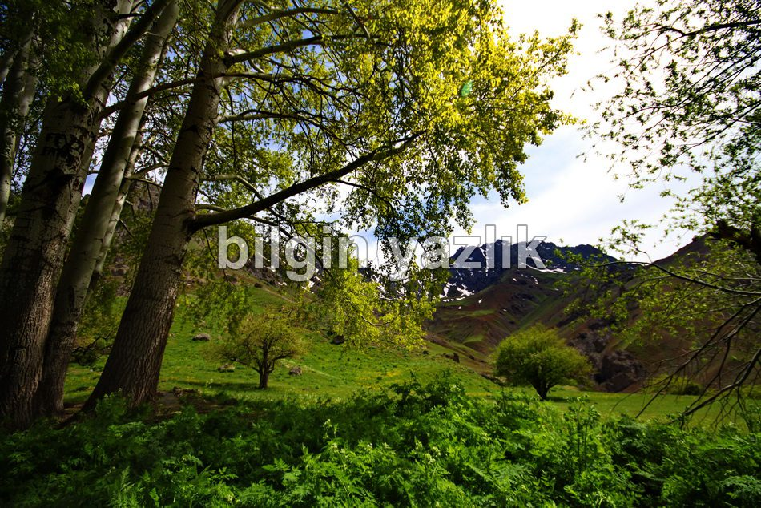

Erek Dağı
Van ili şehir merkezinin doğusunda yükselen bu dağ oldukça heybetli bir görüntü sunuyor bakmasını bilenlere. Bahar aylarında yüzlerce farklı çiçek yaylalarına saçılıyor. Çobanlar koyunlarını bu dağın otlaklarında gezdiriyorlar. Ermeniler tarafından Varak olarak adlandırılan bu dağ Van için büyük bir hazine. Tatlı su kaynaklarını, doğa güzelliklerini, şelaleleri, yer yer ormanları barındırıyor keskin vadilerinin içerisinde. 70’li yıllara kadar ayıların ve domuzların cirit attığı bu dağda artık bu hayvancağızlara rastlamak mümkün değil. Şu an sadece kurt, fare, şahin gibi temel yaban hayat var. Dağın eteklerinde Değirmenköy, Şuşanıs, Yedi Kilise gibi çok sayıda köy yer alıyor. Dağın iç taraflarında Urartulardan kalma bir de baraj gölü var (Keşiş Gölü). Bahar aylarında uçkun adı verilen bitki de yine bu dağda yetişiyor.








Bu yazı taliyol arşivinden taşınmıştır. · özgün kayıt